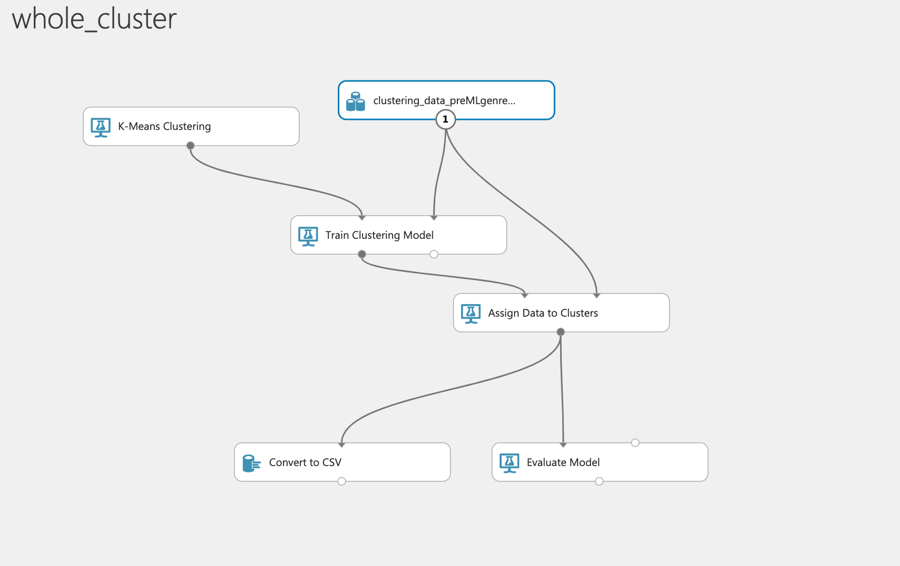
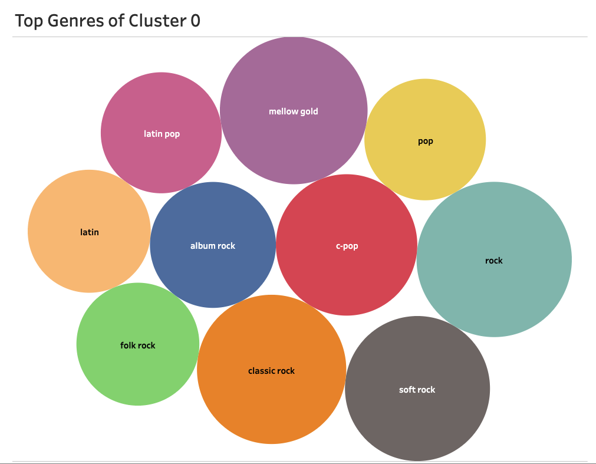

Our Methods
Why we use K-means Clustering
For this project, we wanted to be able to categorize songs by similar genres using machine learning, but given the spotify data that we are using, it proved to be difficult for various different reasons. While our dataset included a genres column for our tracks, there were too many genres to work with (over 2000!), and so many of them had nuanced differences and similarities that could not have otherwise been separated by their titles. For example, Japanese Country and Country Music in general would contain the same "Country" string, but they would have sounded completely different from each other, while Swedish Rock and Italian Punk Rock would have been similar in sound and attributes.
There were plenty of other issues that we ran into. In our dataset, we had some genres that could've been Umbrella terms, but this wasn't applicable for every situation. Psychadelic Rock, Alternative Rock, Indie Rock, and Spanish Rock could've been under the "Rock" umbrella genre, but if we also put Punk Rock, Slow Rock, Pop Rock, and Classic Rock all under the "Rock" category, we would have extremely diverse results, causing unnecessary noise in our analysis.
We eventually came to the conclusion that the best machine learning algorithm to use would be K-means Clustering. This is because we wouldn't have to aggregate genres in our dataset to something more malleable. Instead, we wouldn't have any labels for our machine learning algorithm. The clustering would be determined by the attributes that best described our tracks. These attributes were:
Getting the optimal number of clusters
After going through and cleaning the data, we needed to figure out how many clusters would have been the best for the amount of attributes we were using. To do this, we used the Elbow Method. Alex, take it away, bc I don't know how to describe this so you can make this your section. :)


Using AzureML
After finding the optimal number of clusters (10 clusters), we got down to work with AzureML. We set the amount of clusters we wanted to output to 10, we trained the clustering model with the above listed attributes, we assigned the data to the clusters, and we outputted and evaluated the data. This would put all the songs in our massive dataset into 10 clusters based on how the clusters weighted these attributes. Doing this, we could truly see how nuanced our genres column was. And we also saw several trends in the clusters we outputted.
Clustering Visuals
Here we have two visualizations as a result of our clustering. The first one is a visual of how the cluster weighted each attribute, and how each one is put in perspective, size-wised, against all the other attributes. This is an aggregated average of the aggregated average of the respective, selected cluster.
The next plot is of the genres associated with each artist's track after being clustered. With only the attributes, it is difficult to understand how the algorithm places these tracks in their respective cluster, but it is much more comprehensible when we visualize the genres that happened to be clustered together.
